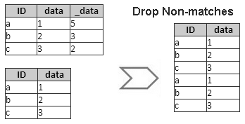
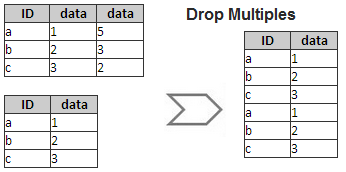
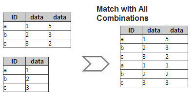

Wenn Sie mehrere Arbeitsblätter habe und diese in einem Signalarbeitsblatt nach übereinstimmender Spaltenbeschriftungszeile zusammenfügen möchten, können Sie das Hilfsmittel Arbeitsmittel nach Beschriftung zusammenfügen.
Um dieses Hilfsmittel zu öffnen, während eine Arbeitsmappe aktiviert ist,
oder
wjoinbylabel -d; im Skript- und Befehlsfenster aus.
Dieses Hilfsmittel verwendet die X-Funktion wjoinbylabel.
Legen Sie den Neuberechnungsmodus fest.
Legen Sie die Eingabearbeitsblätter fest, die Sie zusammenfügen möchten. Siehe die Einzelheiten zur Auswahl von Eingabearbeitsblättern mit Anzeigefeld und Symbolleiste.
Legen Sie die Bedingung der übereinstimmenden Beschriftungszeile fest, um die Arbeitsblätter zusammenzufügen, einschließlich Langname, Einheiten, Kommentare etc.
Legen Sie fest, ob die Spalten mit nicht übereinstimmenden Beschriftungszeilen gelöscht werden sollen.

Legen Sie fest, ob die erste Spalte mit der übereinstimmenden Beschriftungszeile beibehalten und die anderen Spalten gelöscht werden sollen.

Legen Sie fest, ob alle Kombinationen für Spalten mit übereinstimmenden Beschriftungszeilen gezeigt werden.

Bestimmen Sie, ob zur Identifikation der Quellenarbeitsblätter eine Spalte mit dem Langnamen "Quelle" zum Ergebnisblatt hinzugefügt werden soll.
1:1 die Quellarbeitsblätter als 1, 2, 3, ...Aktivieren Sie dieses Kontrollkästchen, um die Spalte Datenidentifizierer vor den zusammengefügten Datenspalten einzufügen. Ansonsten wird die Identifiziererspalte am Ende angehängt.
Legen Sie das Ausgabearbeitsblatt fest.